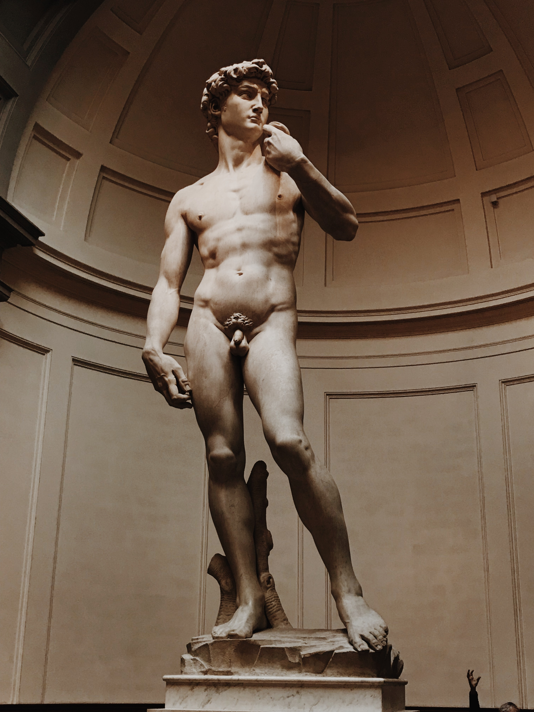
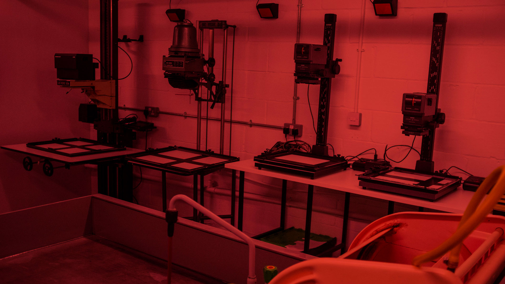

Kunstvormen
Beeldende Kunst
Beeldende kunst is de vorm van kunst waarbij de afbeelding, of het visuele, voorop staat. De afbeelding wordt gerealiseerd, of uitgebeeld, in de vorm van een kunstobject. Een kunstobject kan een platte vorm aannemen, bijvoorbeeld een schilderij, of een ruimtelijke vorm, bijvoorbeeld een beeldhouwwerk. In Engelssprekende landen spreekt men van 'the visual arts'.
Beeldende kunst ontstaat vooral in het atelier maar ook op straat of in tijdelijke ruimtes, en wordt aan het publiek gepresenteerd in tentoonstellingen in musea, galeries, kunstenaarsinitiatieven, en de openbare ruimte. Minder openbaar zijn de kunstverzamelingen van instellingen, overheden en privéverzamelaars.
Beeldhouwkunst
De beeldhouwkunst is een van de beeldende kunsten.
Beeldhouwwerken zijn kunstobjecten die door een beeldhouwer worden vervaardigd uit materialen als brons, smeedijzer, beton, klei, was, gips. Meer specifiek is een steenbeeldhouwer een beeldhouwer die beelden vervaardigt uit natuursteensoorten als marmer, graniet en zandsteen. Bustes, standbeelden en beeldengroepen zijn bekende voorbeelden van beeldhouwwerken.
Fotografie
Fotografie is het met behulp van licht en andere vormen van straling vastleggen van afbeeldingen van voorwerpen en verschijnselen op radiatie- of stralingsgevoelig materiaal. Het woord is afgeleid van het Grieks en betekent letterlijk schrijven met licht (φῶς (phōs): licht, en γράφειν (graphein): schrijven).
Iemand die beroepsmatig fotografie verricht heet een fotograaf. Zeker met de huidige digitale techniek zijn er steeds meer mensen die met een fotobewerkingsprogramma foto's maken. Hiervoor is niet noodzakelijk een fotocamera nodig; men kan bestaande foto's makkelijk bewerken tot een eigen product. Echter, voor het nemen van een foto maakt men wel degelijk gebruik van een camera. Een afdruk van een voorwerp dat direct op lichtgevoelig materiaal gelegd is en vervolgens belicht, is een fotogram.
